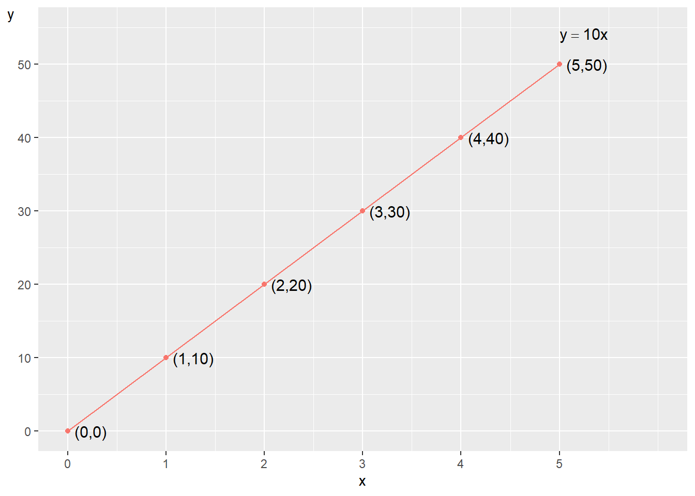
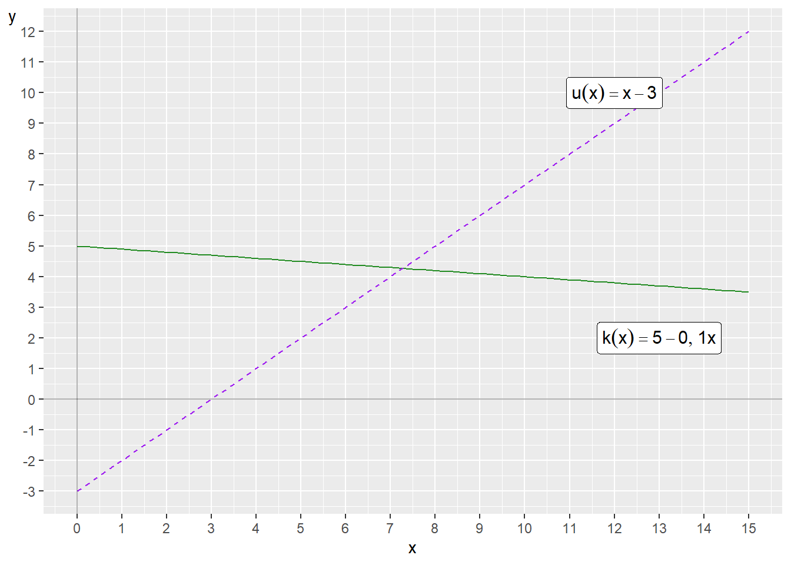
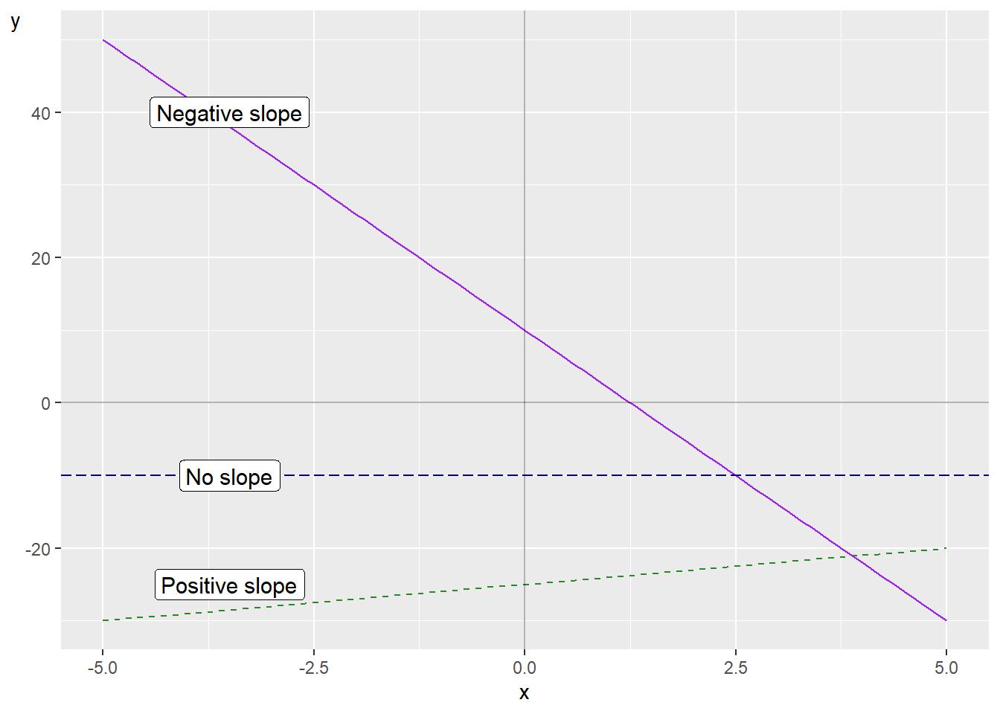
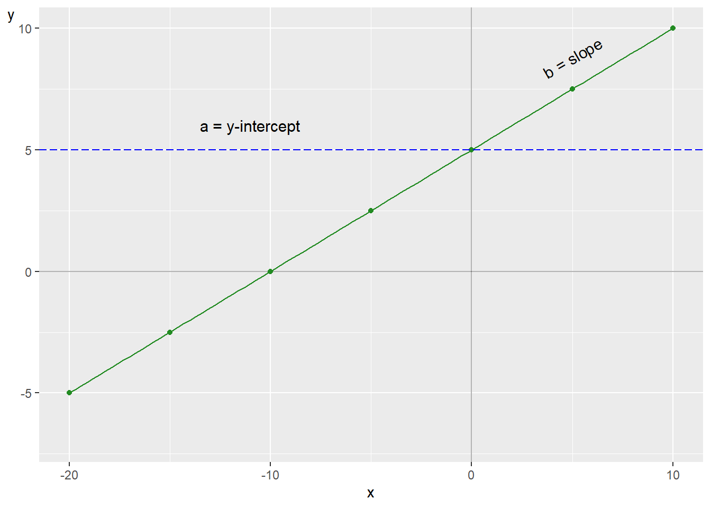
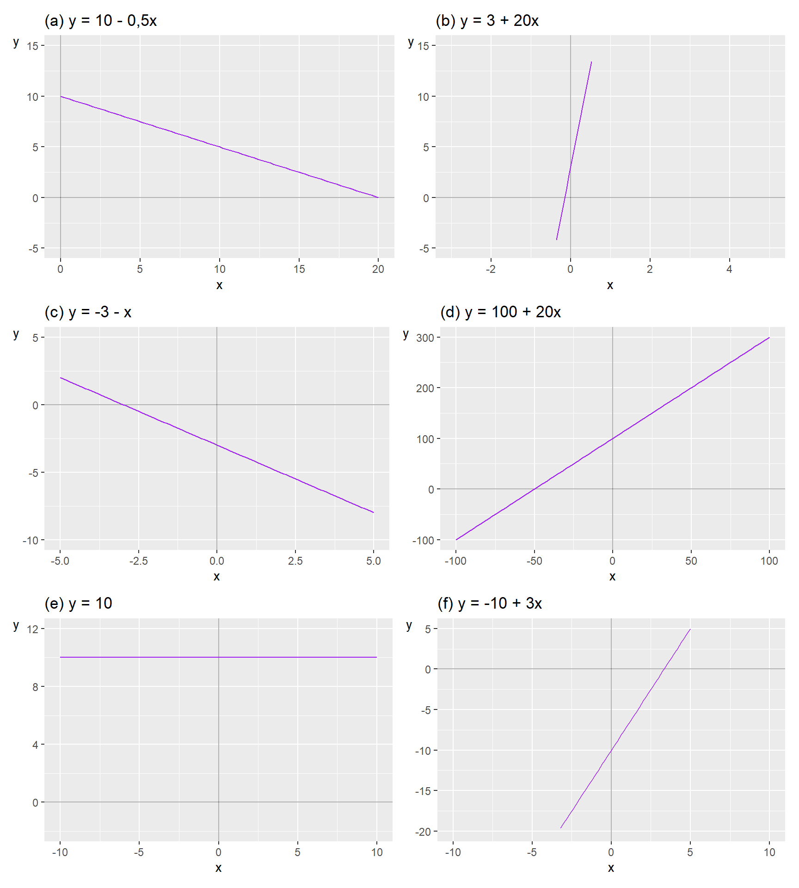
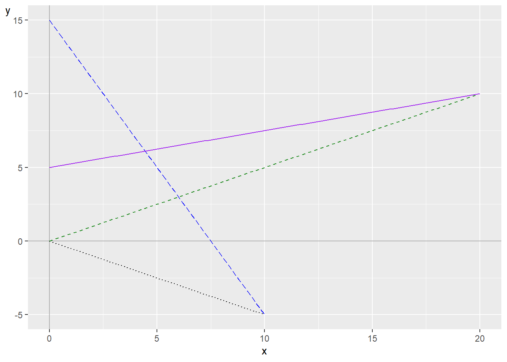
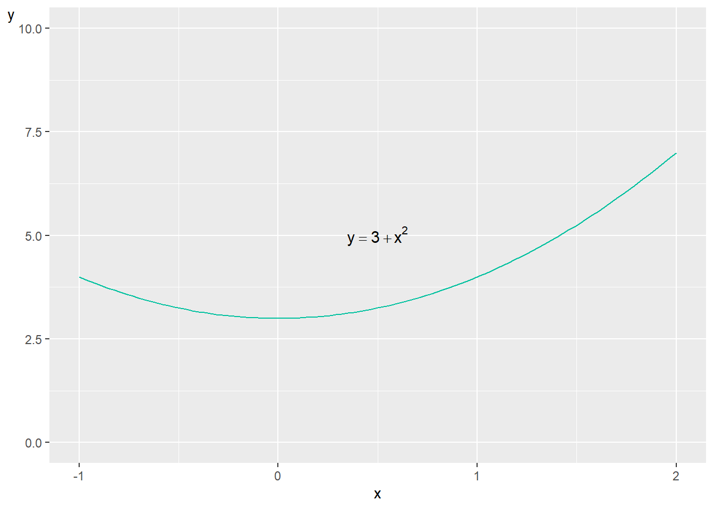
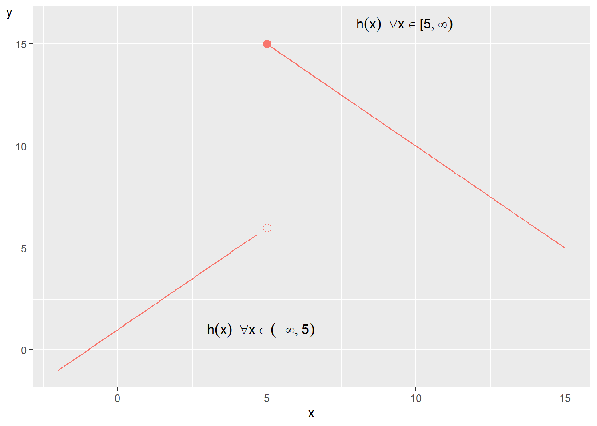

Chapter 4 Functions and graphs
This chapter introduces mathematical functions and graphs. Functions are central to a large amount of mathematical work and can within social science be used both to discuss both theory and empirical data. In later chapters we use mathematical functions in many examples. A graph is some kind of illustration of quantitative values, which can be used to illustrate both theory and data. Sometimes the words diagram, plot or figure are used with a similar meaning.
4.1 Mathematical functions
A mathematical function takes an input value and connects this to an output value. Example of a mathematical function: Take each input value \(x\) and multiply by 2. We call the result \(y\):
\[ \begin{equation} y=2x \tag{4.1} \end{equation} \]
When \(x=1\) then \(y=2\). When \(x=52\) then \(y=104\), and so on. The letters \(y\) and \(x\) are called variables here. Variable \(y\) is a function of \(x\), which we see because \(y\) stands to the left of the equals sign and everything else, including variable \(x\), stands to the right of the equals sign. Variable \(x\) is the input value and variable \(y\) is the output value. This can also be described as the variable \(y\) being explained by the variable \(x\). Variable \(x\) is the explanatory, or independent, variable. Variable \(y\) is the explained, or dependent, variable.
Which input values that \(x\) can take we may also determine and describe. This is called defining for which values of \(x\) equation (4.1) applies. It can for example be any real number or all numbers within an interval. If \(x\) is any number between 1 and 100, the minimum value for \(y\) is:
\[ \begin{equation} y=2*1=2 \end{equation} \]
and the largest value for \(y\) becomes \(y=2*100=200\). In equation (4.1) the number 2 indicates how much \(y\) changes when the variable \(x\) increases by 1. The number 2 represents a constant that is always 2, regardless of whether \(x=1\) or \(x=14\) and so on. For \(x=5\) we get \(y=2*5=10\). For \(x=6\) we get \(y=2*6=12\). When \(x\) increases from 5 to 6, \(y\) increases by 2. In the equation, \(y\) and \(x\) are called variables as mentioned. The number 2 in the equation is called a coefficient or parameter.
A function can also be described in the following way:
\[ \begin{equation} y=f\left(x\right) \end{equation} \]
This expression can be read as \(y\) is a function of \(x\), where we now call the mathematical function \(f\). The letter \(f\) doesn’t mean anything particular other than that a function exists in some form. The letter \(f\) is arbitrarily chosen. A mathematical function that we define ourselves we may also name whatever we want. The function \(f\) can be both simple and advanced. The only thing we can discern from \(f\left(x\right)\) is that it uses the variable \(x\) as input value and results in variable \(y\). Suppose we have a function \(g\left(x\right)\) where we only know that the function uses the variable \(x\). As long as we have not said anything more about the functions’ form, \(f\) and \(g\) can be the same function. Functions don’t have to do anything spectacular. A function can for example be: \(y=h\left(x\right)=x\), where each value for \(y\) is the same value as \(x\).
Functions can be designed in many (infinite) different ways and can contain any number of variables and coefficients (parameters, constants). Here is an example where a variable \(y\) is a function of the two variables \(x\) and \(z\). We call the function \(v\):
\[ \begin{equation} y=v\left(x,z\right)=2x+3z \end{equation} \]
| \(x\) | \(z\) | \(y=2x+3z\) |
|---|---|---|
| 1 | 1 | \(2*1+3*1=5\) |
| 2 | 2 | \(2*2+3*2=10\) |
| 3 | 3 | 15 |
| 4 | 4 | 20 |
| 5 | 5 | 25 |
Table 4.1 shows some values for \(x\) and \(z\), as well as some values for \(y\) calculated with function \(v\left(x,z\right)\). In chapter 2 we went through absolute values, a number’s distance from 0 on the number line. Absolute values can also be used when we work with functions. Consider the following function \(p\left(x\right)\) as an example:
\[ \begin{equation} p\left(x\right)=5+2x \end{equation} \]
The absolute value of \(p\left(x=5\right)\) becomes then:
\[ \begin{equation} \left|p\left(5\right)\right|=\left|5+2*5\right|=15 \end{equation} \]
The absolute value of \(p\left(x=-5\right)\) becomes:
\[ \begin{align} \left|p\left(-5\right)\right| & =\left|5-2*\left(-5\right)\right|=5 \end{align} \]
4.2 Function as theory
Mathematical functions can among other things be used to describe how we think about relationships between different phenomena in reality, or to describe theories about causal relationships. A causal relationship can for example be formulated: Variations in phenomenon A cause variations in phenomenon B. Or: An increase in X will lead to a decrease in Y. These types of formulations do not necessarily mean that one phenomenon explains everything that happens in the other phenomenon. Variations in one phenomenon may only explain a small part of the variation in the other phenomenon.
Suppose we have a theory that higher income for some reason causes people to live longer. One way to describe causal relationships is with arrows: \(X\rightarrow Y\), where \(X\) symbolizes annual income calculated in thousands of USD and \(Y\) stands for life expectancy in years. The arrow goes from income \(X\) to life expectancy \(Y\), which symbolizes how we believe the relationship works: changes in \(X\) cause changes in \(Y\). With the help of mathematics one may specify the theory, for example in the form of the following equation:
\[ \begin{equation} Y=a*X \tag{4.2} \end{equation} \]
The letters \(Y\) and \(X\) are just designations. If we prefer we may write out the words, \(\text{life expectancy}=a*\text{income}\), but equations often become hard to read if we write out long words. The coefficient a is an unknown value, which symbolizes how much \(Y\) changes when \(X\) changes by 1. In this case a is a constant, a number that doesn’t change even if \(X\) changes. We don’t know what value a has, only that this number is the same for all values of \(X\). This means that regardless of whether \(X\) changes from 3 to 5, or if \(X\) changes from 543 to 600, a will have the same value.
Purely mathematically the coefficient a can be both positive, negative or 0. If \(a=0\) it means that Y doesn’t change when \(X\) changes, which in that case means that there is no relationship between the variables. As equation (4.2) is formulated we mean that a person with 0 USD in income will have a life expectancy of 0 years:
\[ \begin{equation} Y=a*0=0 \end{equation} \]
That doesn’t sound like a credible theory. Let us assume that there is a lower limit, so that even if one doesn’t earn any money one can manage to get by somehow. We call this theoretically expected life expectancy b and add it to our equation:
\[ \begin{equation} Y=aX+b \end{equation} \]
A person with zero income can now, according to our theory, be expected to live for \(b\) years:
\[ \begin{equation} Y=a*0+b=b \end{equation} \]
What is a variable and coefficient should always be clear from the context, but can sometimes be hard to keep apart. There is no rule for which letters one uses for what.
Let us assume that we have our theory about income and life expectancy formulated as in equation (4.2) and that we have arrived at \(a=0.01\). That is, for every 1,000 USD a person’s annual income increases, the person lives 0.01 years longer, regardless of at what income or age this occurs.
Regardless of whether any such relationship exists or not, this theoretical model is a clumsy description of reality. But with mathematics we can more easily discuss the details. There might be parts of the theory that still seem to match reality while other parts need to be rewritten. With mathematics it also becomes easier to be more exact in which parts of the theory seem to match better or worse with reality.
4.3 Coordinate system and graphs
Functions of the type \(y=f\left(x\right)\) can be drawn in graphs. This is useful for many different reasons. Often we draw graphs with two axes, one for height and one for width. Another word for this is dimensions: a vertical dimension for the height, and a horizontal dimension for the width. By tradition the horizontal axis, the width, is called the x-axis while the vertical axis, the height, is called the y-axis. These names of the axes in the graph have no mathematical meaning however. It is just a common way to describe them. We may call the axes in the graph whatever we want.
A graph with x- and y-axis illustrates combined values of the variables \(x\) and \(y\). The values for the variable \(x\) are placed in the graph with regard to the horizontal x-axis while the values for \(y\) are placed with regard to the vertical y-axis. Consider the following function as an example:
\[ \begin{equation} y=10x \end{equation} \]

Figure 4.1: Illustration of the function $ y=10x $
Now we are going to draw this function in a graph for the values of \(x\) that are between 0 and 5. We use the \(x\)-values to calculate the values for \(y\). The combined values of \(x\) and \(y\) are shown in figure 4.1 . The points along the black line show the combined values of \(x\)(the horizontal axis) and \(y\)(the vertical axis) at the whole numbers 0 to 5. Two combined values of the variables \(x\) and \(y\) can be written with parentheses \(\left(x,y\right)\), which represents a point in the graph. The point \(\left(x,y\right)=\left(2,20\right)\) has the values \(x=2\) and \(y=20\). The point where \(x=y=0\) can be written \(\left(x,y\right)=\left(0,0\right)\) and is called the zero point or origin.
The black line is leaning to the upper right corner of the graph. The coefficient 10 in the equation indicates how much variable \(y\) changes each time variable \(x\) increases by 1. When \(x\) increase from 1 to 2, \(y\) increase from 10 to 20. In the graph we may see this by following the black line and comparing the values on the x- and y-axis.
A graph may have lines from multiple functions for example the following functions \(k\left(x\right)\) and \(u\left(x\right)\):
\[ \begin{align} y & =k\left(x\right)=5-0.1x\\ y & =u\left(x\right)=x-3\nonumber \end{align} \]

Figure 4.2: Two functions in the same graph
Figure 4.2 illustrates the functions \(k\left(x\right)\) and \(u\left(x\right)\). The line for the function \(f(x)\) in figure 4.1 slopes upward to the right in the graph. This is called that the line have a positive slope. The function \(u\left(x\right)\) also has a positive slope. If the line instead slopes downward to the right in the picture, it has a negative slope, higher values for \(x\) mean smaller values for \(y\). The function \(k\left(x\right)\) results in a negative slope.
If the line is completely horizontal it has no slope. Figure 4.3 shows three lines as examples of negative, positive and no slope.

Figure 4.3: Positive slope, negative slope and no slope
The functions we work with in this book are defined so that for each value of \(x\) that a function uses, this \(x\) will only connect to at most one value of \(y=f\left(x\right)\). In a two-dimensional graph this means that the line for the function in the graph only coincides with one point on the x-axis and never goes over or under itself, since the current \(x\)-value would then be connected to several values on the y-axis. This also means that when you see a line in a graph with unique y-values for each \(x\), this line can always be drawn with a mathematical function, regardless of how the line looks. A function that connects a unique value of \(x\) to several values of \(y\) is called a multi-valued function but is not described here.
4.4 Equation of a straight line
A particularly important type of equation is the equation of a straight line. The most basic form of this equation can be written in the following way:
\[ \begin{equation} y=a+bx \tag{4.3} \end{equation} \]
where \(y\) and \(x\) are variables and the letters \(a\) and \(b\) are constant coefficients or parameters. Every straight line in a graph can be drawn with an equation of this form. The letter \(b\) indicates how much \(y\) changes when \(x\) increases by 1. The letter \(a\) indicates the value for \(y\) when \(x=0\), which we can check by substituting \(x=0\) into the equation:
\[ \begin{align} y & =a+bx=a+b*0=a \end{align} \]
The first coefficient, in this case called \(a\), is also called the y-intercept, or just intercept. This is since \(a\) is the y-value where the line intersects the y-axis when \(x=0\). Coefficient \(b\) is called the slope coefficient, since it indicates the slope of the line (the change in \(y\) when \(x\) increases by 1). In section 4.2 we described a theory about the relationship between income and life expectancy with the function \(Y=aX\). This is also a form of the equation of a straight line but the coefficient that indicates the y-intercept is in this case equal to 0.
If we use equation (4.3) and set \(a=0\) we get:
\[ \begin{align} y & =a+bx=0+bx=bx \end{align} \]
So we have one function \(y=bx\) and from earlier the function \(Y=aX\). The two functions can describe exactly the same relationship between the two variables. That we use different letters in the two functions has no mathematical significance. The important thing when we use letters is that we explain what the letters symbolize.

Figure 4.4: A straight line
In figure 4.4 an example of a line in a graph is shown. We don’t know yet what equation the line has. But since the line is straight we know that it can be represented by an equation with the corresponding form as \(y=a+bx\). Now we are going to calculate the values for the two constant coefficients \(a\) and \(b\). The coefficients \(a\) and \(b\) can be calculated from the graph. We find coefficient \(a\) by comparing where the line intersects the y-axis when \(x=0\), which is at \(y=5\). We substitute the values \(x=0\) and \(y=5\) into our equation \(y=a+bx\) to get \(a\):
\[ \begin{align} y & =a+bx\\ 5 & =a+b*0\nonumber \\ 5 & =a\nonumber \end{align} \]
Now we are going to calculate the slope coefficient \(b\). Two points to the left of the y-axis we see that the line intersects the x-axis at the point where \(x=-10\). Here follow two methods for calculating \(b\), the slope of the line.
Method 1: The point on the line where \(x=-10\) is \(y=0\). We know that \(a=5\). We substitute these values into our equation to get b:
\[ \begin{align} y & =a+bx\\ 0 & =5+b(-10)\nonumber \\ 10b & =5\nonumber \\ b & =\frac{5}{10}=\frac{1}{2}=0.5\nonumber \end{align} \]
Method 2: Coefficient \(b\) is the slope of the line, how much \(y\) changes when \(x\) increases by 1. We have noted two points for the line in the graph: point 1 where \(\left(x_{1},y_{1}\right)=\left(-10,0\right)\) and point 2 where \(\left(x_{2},y_{2}\right)=\left(0,5\right)\). From these the slope of the line can be calculated by comparing how much \(y\) changes between \(y_{1}\) and \(y_{2}\), and how much \(x\) changes between \(x_{1}\) and \(x_{2}\):
\[ \begin{align} b & =\frac{y_{2}-y_{1}}{x_{2}-x_{1}}=\frac{5-0}{0-(-10)}=\frac{5}{10}=\frac{1}{2}=0.5 \tag{4.4} \end{align} \]
Sometimes the equation of a straight line is written with other letters, for example:
\[ \begin{equation} \gamma=\alpha_{1}+\alpha_{2}\Gamma \end{equation} \]
The important thing is what the letters symbolize and that this is clearly evident. In this case the Greek letters \(\gamma\) and \(\Gamma\)(small and capital gamma) are two different variables, while \(\alpha_{1}\) and \(\alpha_{2}\)(alpha 1 and 2) are the equation’s constant coefficients. That we add the subscript numbers 1 and 2 to the constants \(\alpha_{1}\) and \(\alpha_{2}\) is only a way of writing. The subscript numbers indicate that \(\alpha_{1}\) is a different coefficient than \(\alpha_{2}\). Just as above, \(\alpha_{1}\) indicates the line’s y-intercept (the value for \(\gamma\) when \(\Gamma=0\)) while coefficient \(\alpha_{2}\) indicates the line’s slope.
In figure 4.5 some plots are shown where we have drawn different examples of functions of the form \(y=a+bx\). Go through carefully and make sure that you are certain that you understand how the line in each plot relates to its equation. Check that the values for \(a\) and \(b\) match what you see in the plot. Here we have the following four different functions:
\[ \begin{align} \text{(a) }y & =0.5x\\ \text{(b) }y & =-0.5x\nonumber \\ \text{(c) }y & =15-2x\nonumber \\ \text{(d) }y & =5+\frac{1}{4}x\nonumber \end{align} \]

Figure 4.5: Examples of the linear function

Figure 4.6: Four lines in the same graph
where each function describes a relation between the two variables \(y\) and \(x\). In figure 4.6 a line is drawn for each respective function. Let us go through how we can see which line belongs to which function. In the graph two lines pass through the origin: \(\left(x,y\right)=\left(0,0\right)\). Both functions (a) and (b) have the value \(y=0\) when \(x=0\), which we may see since these functions lack a constant for the y-intercept, a term that is not multiplied by \(x\). One of these lines has a positive slope, \(y\) increases as \(x\) increases, while the other line has a negative slope, \(y\) decreases as \(x\) increases. Function (a) draws a line with positive slope because \(x\) is multiplied by the positive value 0.5. The line for function (b) has negative slope since \(x\) is multiplied by -0.5.
The two remaining lines also have a positive and negative slope respectively, which is sufficient to determine which of functions (c) and (d) belongs to which line. Function (c) has the negative constant \(-2\) in front of \(x\), while function (d) has the positive constant \(\frac{1}{4}\) in front of \(x\).
Function (c) is the line in the graph that meets the y-axis at \(y=15\), which corresponds to the constant 15 in the function. Function (d) meets the y-axis at \(y=5\), which corresponds to the constant 5 in the function.
The equation of a straight line is central to a large amount of analytical work and one of the red threads through most of this book. Therefore, make sure to take a little extra time to ensure that you are following along this far. Feel free to go back and review the text. If something feels unclear or strange, it can sometimes help to read other descriptions of the same phenomena online or in other books.
4.5 Solve for \(x\)
In many situations we want to solve for a variable from an equation, for example variable \(x\). This means that we rewrite our equation so that \(x\) stands on one side of the equality sign and everything else in the equation stands on the other side. Here is an example where we solve for \(x\) by dividing both sides by 4:
\[ \begin{align} 4x & =5\\ x & =\frac{5}{4}\nonumber \\ x & =1.25\nonumber \tag{4.5} \end{align} \]
Since we have found a solution for \(x\), we are done with the task. Consider another example where we shall solve for \(x\):
\[ \begin{equation} 3+2x=10 \end{equation} \]
To solve for \(x\) we change both the left and right side of the equality sign simultaneously. We start by subtracting 3 from both sides:
\[ \begin{align} 3+2x & =10\\ 3+2x-3 & =10-3\nonumber \\ 2x & =7\nonumber \tag{4.6} \end{align} \]
Then we divide both sides by 2:
\[ \begin{align} 2x & =7\\ \frac{\cancel{2}x}{\cancel{2}} & =\frac{7}{2}\nonumber \\ x & =\frac{7}{2}\nonumber \end{align} \]
To solve for a variable often means that we create a new equation. Let us take the following expression as an example:
\[ \begin{equation} a+bx=c \end{equation} \]
The letter x is our variable that we shall solve for. The letters a, b and c now symbolize different constants, any real numbers. Even though we don’t know what numbers the letters represent, we can still solve for x. The result becomes a new equation:
\[ \begin{align} a+bx & =c\\ bx & =c-a\nonumber \\ x & =\frac{c-a}{b}\nonumber \end{align} \]
Numbers and different letters can also be combined in the same function. For example:
\[ \begin{equation} z=h\left(p\right)=3+5a+8p+ab \end{equation} \]
where z and p are variables and a and b are coefficients. We solve for p:
\[ \begin{align} z & =3+5a+8p+ab\\ & =3+a\left(5+b\right)+8p\nonumber \\ -8p & =3+a\left(5+b\right)-z\nonumber \\ p & =\frac{-3-a\left(5+b\right)+z}{8}\nonumber \end{align} \]
In the next example we shall solve for x:
\[ \begin{align} x\left(5+58\right) & =3+4\\ x & =\frac{7}{63}\nonumber \\ x & =\frac{1}{9}\nonumber \end{align} \]
We now have a combination of numbers, letters that represents numbers and the variable \(x\). We solve for \(x\):
\[ \begin{align} 9x\left(a+b\right) & =a+b\\ x & =\frac{1}{9}\left(\frac{a+b}{a+b}\right)\nonumber \\ x & =\frac{1}{9}\nonumber \end{align} \]
Often we encounter situations when the variable we shall solve for stands on both sides of the equality sign. Here is an example with an equation where we shall solve for variable \(z\). We move all parts where \(z\) appears to the left side:
\[ \begin{align*} z\left(\frac{25}{80+20}\right) & =4\left(z-2\right)\\ z\frac{25}{100} & =4z-8\\ z\frac{1}{4}-z4 & =-8 \end{align*} \]
Now we have all terms where \(z\) appears on the left side of the equality sign. But the equation can be simplified further to solve for an expression for \(z\). We therefore move everything else in the equation to the right side:
\[ \begin{align} z\frac{1}{4}-z4 & =-8\\ z\left(\frac{1}{4}-4\right) & =-8\nonumber \\ z & =\frac{-8}{-15/4}\nonumber \\ z & =\frac{32}{15}\nonumber \end{align} \]
Here follows another example where we shall now solve for \(x\). Initially we now have several terms where the variable \(x\) appears. In the equation, besides \(x\), there are also numbers and the letter \(y\). What \(y\) represents is not crucial for this example. It can be another variable or only a constant written as a letter. To solve for \(x\) we move all terms which do not include any \(x\) to the right hand side:
\[ \begin{align} -17x-14y-\frac{60x}{30} & =-5y\\ -17x-\frac{60x}{30} & =-5y+14y\nonumber \\ -17x-2x & =9y\nonumber \\ 19x & =-9y\nonumber \\ x & =-\frac{9}{19}y\nonumber \end{align} \]
Here is an example where we have a larger equation with the two variables \(x\) and \(y\), with several parameters, constants. Let us simplify this a bit:
\[ \begin{align} 17x+14y-\frac{60x}{30} & =5y\\ 17x-2x & =5y-14y\nonumber \\ 15x & =-9y\nonumber \end{align} \]
This looks a bit more comfortable. But we may also continue to simplify from here, for example to solve for \(x\):
\[ \begin{equation} x=-\frac{9}{15}y \end{equation} \]
We can also solve for \(y\):
\[ \begin{align} x & =-\frac{9}{15}y\\ -9y & =15x\nonumber \\ 9y & =-15x\nonumber \\ y & =-\frac{15}{9}x\nonumber \end{align} \]
It is difficult to do much more with this equation unless we get more information about \(x\) and \(y\). Even if we rewrite it, we need to know something more to be able to find a unique solution for the variables.
4.6 Linear equations
The equation of a straight line, \(y=a+bx\), can be used to draw a straight line in a graph with two axes, one horizontal and one vertical. More generally, a function \(f\left(x\right)\) is defined as linear if the following two conditions are fulfilled:
\[ \begin{align} \text{Condition 1: } & f\left(x_{1}+x_{2}\right)=f\left(x_{1}\right)+f\left(x_{2}\right)\text{ for all }x_{1}\text{ and }x_{2}\\ \text{Condtion 2: } & f\left(ax\right)=af\left(x\right)\text{ for all }a\nonumber \tag{4.7} \end{align} \]
where \(x_{1}\) and \(x_{2}\) are two different input values on the explanatory variable \(x\), which are used in function \(f\). Let us illustrate with the function \(y=f\left(x\right)=0.25x\). We try the values \(x_{1}=5\) and \(x_{2}=10\). Condition 1:
\[ \begin{align} f\left(5+10\right) & =f\left(5\right)+f\left(10\right)\\ 0.25*15 & =0.25*5+0.25*10\nonumber \\ 3.75 & =3.75\nonumber \end{align} \]
We try condition 2 with the values \(a=5\) and \(x=3\):
\[ \begin{align} f\left(5*3\right) & =5f\left(3\right)\\ 0.25*15 & =5*0.25*3\nonumber \\ 3.75 & =3.75\nonumber \end{align} \]

Figure 4.7: The line for the function $ y=3+x^{2}$
This means that the function \(y=f\left(x\right)=0.25x\) is linear. Let us now check if the following function is linear: \(y=3+x^{2}\). For condition 1 we try \(x_{1}=5\) and \(x_{2}=10\):
\[ \begin{align} f\left(5+10\right) & =f\left(5\right)+f\left(10\right)\\ 3+\left(15\right)^{2} & =\left(3+5^{2}\right)+\left(3+10^{2}\right)\nonumber \\ 3+225 & \neq28+103\nonumber \end{align} \]
The function does not fulfill the condition and is therefore not linear. Due to the term \(x^{2}\) we also see that the equation is not drawn as a straight line in a graph. Figure 4.7 illustrates this, where the line is curved.
4.7 A bit of set theory
A collection of numbers is called a set or number set. A set can consist of many numbers or a few. Here is an example of a number set \(A=\left\{ 2,6,13\right\}\) which is called \(A\) and contains the three numbers 2, 6 and 13. In a number set the order of the numbers has no significance, unless this is explicitly stated. For example the set \(A=\left\{ 2,6,13\right\}\) can also be described as \(A=\left\{ 13,2,6\right\}\) or as \(A=\left\{ 6,2,13\right\}\). In the introduction to the chapter we described the integers, which are usually symbolized by the letter \(\mathbb{Z}\):
\[ \begin{equation} \mathbb{Z}=\left\{ ...,-2,-1,0,1,2,...\right\} \end{equation} \]
The integers, \(\mathbb{Z}\), are an example of a number set. There are infinitely many integers and all are included in the set \(\mathbb{Z}\). We also work with the rational numbers, which are symbolized by \(\mathbb{Q}\), where all numbers are included that can be expressed as a fraction with two integers where the denominator is not 0. For example:
\[ \begin{equation} \frac{1}{13},\,\frac{78}{84},\,\frac{3}{2},\,\frac{140}{3} \end{equation} \]
We also work with the irrational numbers, which are the numbers that cannot be written as a fraction of two integers. Here we have for example \(2^{1/2}\)(the square root of 2), \(\pi\left(\text{the number pi}\right)\) and \(e\)(Euler’s number, approximately 2.718, discussed more below). The real numbers are denoted \(\mathbb{R}\). One way to describe a set that includes all irrational numbers is \(\mathbb{R}\backslash\mathbb{Q}\), where the backslash is called set difference. The expression \(\mathbb{R}\backslash\mathbb{Q}\) can be read as “the real numbers, excluding the rational numbers”. Another useful symbol is \(\in\), which means “in” or “belongs to”, such as for example:
\[ \begin{equation} 3\in\mathbb{R} \end{equation} \]
This means that the number 3 belongs to the real numbers. Above we described the following:
\[ \begin{equation} \mathbb{Z}\in\mathbb{Q}\in\mathbb{R}, \end{equation} \]
This means that the integers \(\mathbb{Z}\) are included in the rational numbers \(\mathbb{Q}\), which are included in the real numbers \(\mathbb{R}\). Since all integers are included in the rational numbers \(\mathbb{Z}\) is a subset of \(\mathbb{Q}\). The condition for something to be described as a subset is that every value is included in the larger set. And since all \(\mathbb{Q}\) are included in \(\mathbb{R}\), \(\mathbb{Q}\) is also a subset of \(\mathbb{R}\). Subset can be written with the symbol \(\subseteq\):
\[ \begin{equation} \mathbb{Z}\subseteq\mathbb{Q}\subseteq\mathbb{R} \end{equation} \]
Conversely \(\mathbb{R}\) is a superset of \(\mathbb{Q}\), which is a superset of \(\mathbb{Z}\). Superset can be written with the symbol \(\supseteq\):
\[ \begin{equation} \mathbb{R}\supseteq\mathbb{Q}\supseteq\mathbb{Z} \end{equation} \]
A common way to define number sets is with parentheses and brackets: \(\left(-1,1\right)\) or \(\left[-1,1\right]\). Both these expressions describe an interval between \(-1\) and 1. Parentheses, \(\left(\right)\), mean that the number set includes all values between the interval but not the endpoints, the values \(-1\) and 1. This is called the number set being open. Brackets, \(\left[\right]\), mean that the set also includes the endpoint values \(-1\) and 1, which is called the number set being closed. Say for example that we have a letter, \(a\), which represents a value between 1 and 5. This can be written:
\[ \begin{equation} a\in\left[1,5\right] \end{equation} \]
This means that \(a\) is one of all possible values between 1 and 5. The letter \(a\) can symbolize the number 1 or the number 2.43. To define an interval where the boundary values 1 and 5 respectively are not included, we write instead:
\[ \begin{equation} a\in\left(1,5\right) \end{equation} \]
In this case the number \(a\) can be any of all values between 1 and 5, but not exactly 1 or 5. Parentheses mean that all values are included in the intervals except the boundary values 1 and 5. For example 1.000001 and 4.999999967 and all other decimal values that come infinitely close to 1 and 5 are included, but not the integers themselves.
Now we have described how the small letter \(a\) can assume a value between 1 and 5. If we instead want to define a set of numbers that contains all values in an interval, for example 1 to and including 5, we may write:
\[ \begin{equation} A=\left\{ x|x\in\left[1,5\right]\right\} \end{equation} \]
The letter \(A\) now symbolizes the set of values. Each value in set \(A\) is represented by the letter \(x\), where \(x\) is in the interval \(\left[1,5\right]\). The complement set to a set \(A\) is the set with all values that are not included in \(A\). The complement set to \(A\) is written \(A^{\complement}\):
\[ \begin{equation} A^{\complement}=\left\{ x|x\in\left(-\infty,1\right)\text{ och }x\in\left(5,\infty\right)\right\} \end{equation} \]
The values in \(A^{\complement}\) consist of all real numbers from negative infinity up to 1 as well as from 5 up to positive infinity. Positive and negative infinity is not real values and therefore not included in \(\mathbb{R}\) either. If a set contains only the number 0 this can be written as \(\left\{ 0\right\}\) and is called the null set.
If a set is empty and contains no value at all, not even the number 0, this is called the empty set, which can be written as \(\emptyset\) or \(\left\{ \right\}\). The empty set is by definition a subset of every other set. For example, if we have the set \(\left(14,17\right)\), the values 14 to 17, then \(\emptyset\in\left(14,17\right)\) as well. Suppose we have the two sets \(A\) and \(B\) respectively and shall create a new set \(C\) that consists of all unique values in \(A\) and \(B\) together. This can be written with the symbol \(\cup\), which is called union:
\[ \begin{equation} C=A\cup B \end{equation} \]
Note that \(\cup\) is not the same thing as addition. Say for example that we have the following two sets:
\[ \begin{align} A=\left\{ 1,2,3,4,5\right\} , & \quad B=\left\{ 3,4,5,6,7\right\} \end{align} \]
If we take the union of these two sets we get:
\[ \begin{equation} C=A\cup B=\left\{ 1,2,3,4,5,6,7\right\} \end{equation} \]
If we instead want the new set \(C\) to contain the values in \(A\) that are not found in \(B\) we can remove these with the operator \(\setminus\)(set difference), which we also mentioned above:
\[ \begin{equation} C=A\setminus B=\left\{ 1,2\right\} \end{equation} \]
Say now that the new set \(C\) should contain the values from \(A\) and \(B\) that they have in common. This we can achieve with the operator \(\cap\), which is called the intersection:
\[ \begin{equation} C=A\cap B=\left\{ 3,4,5\right\} \end{equation} \]
If all decimal values are included in an interval this is called a continuous interval. If we have a continuous interval, all decimals between 0 and 1, we by definition always have an infinite set of values, since the number of decimals can always increase. If we instead have a set that only contains the integers 1 to 3 the set is not continuous since the values between the integers are not included in the set. Instead this is a discrete set, where the word discrete means that the number of values included in the set can be counted. Let us now take the following function:
\[ \begin{equation} y=f\left(x\right)=\frac{1}{x},\forall x\in(-\infty,0)\cup\left(0,\infty\right) \tag{4.8} \end{equation} \]
The symbol \(\forall\) means “for all”. The expression \(\forall x\in\) therefore means “for all \(x\) in”. The entire expression means that the function \(f\left(x\right)\) is defined for all \(x\) except the following values: negative infinity, 0 and positive infinity. The reason why \(1/x\) is not defined for \(x=0\) here is that \(f(x)\) then goes to infinity, not a real value. The reason for this is, somewhat simplified, the following. If we multiply \(1/x\) with \(x\) we get \(x*\left(1/x\right)=\left(x/x\right)=1\). But there is no real number that can be multiplied with \(1/0\) to get 1, since any number multiplied with 0 equals 0.
A function that is defined over a collection of real values and does not have any interruptions or “sudden” changes between two adjacent values is called continuous. Function \(f\) in equation (4.8) is continuous over the intervals \((-\infty,0)\) and \(\left(0,\infty\right)\). Since \(f\) is not defined for \(x=0\) the function is not continuous for intervals that include the value 0. Let us now take the following example:
\[ \begin{equation} y=h\left(x\right)=\begin{cases} 1+x, & \forall x\in(-\infty,5)\\ 20-x & \forall x\in[5,\infty) \end{cases} \tag{4.9} \end{equation} \]
Function \(h\) is defined as \(h\left(x\right)=1+x\) for all real \(x\)(negative infinity \(-\infty\) is not a real number) up to just below \(x=5\). From \(x=5\) up to just below positive infinity \(\left(\infty\right)\) the function is defined as \(h\left(x\right)=20-x\). For \(x=4.99\) and \(x=5\) we get:
\[ \begin{align} h\left(x=4.99\right) & =1+4.99=5.99\\ h\left(x=5\right) & =20-5=15\nonumber \end{align} \]
Function \(h\left(x\right)\) is not continuous, which is illustrated in figure 4.8 . The small ring symbolizes that \(h\left(x\right)\) is defined infinitely close to \(x=5\). At the value \(x=5\) the function’s value is instead the filled point \(\left(x,y\right)=\left(5,15\right)\). The slope of the lines differ in the manner described in equation (4.9) .

Figure 4.8: A non-continuous function
4.8 Domain for a function
Let us again take our theory about the relationship between income and life expectancy that we used in section 4.2 : \(y=f\left(x\right)=ax\), where \(y\) is life expectancy, \(x\) is income and coefficient a indicates how much the life expectancy \(\left(y\right)\) changes when the income \(\left(x\right)\) increases by one unit. In this case \(x\) and \(y\) cannot assume just any values. Neither \(x\) nor \(y\) can in this example be negative, below 0. We therefore say that for \(x<0\) the function \(f\left(x\right)\) is not defined. Another way to describe this is:
\[ \begin{equation} y=f\left(x\right)=ax,\:\forall x\geq0 \end{equation} \]
The entire expression can be read as \(y\) is a function of \(x\) for all \(x\) \(\left(\forall x\right)\) that is equal to or above zero \(\left(\geq0\right)\). The values that a function can result in, the values that \(y\) can take, are called the codomain. The input values of \(x\), for which our function is defined, are called the domain.
Let us take another example:
\[ \begin{equation} y=f\left(x\right)=\frac{1}{x},\:\forall x\ne0 \tag{4.10} \end{equation} \]
This new function \(f\) is defined for all values of \(x\) that are not equal to 0. Another way to write the same thing is:
\[ \begin{equation} y=f\left(x\right)=\frac{1}{x},\:x\in\mathbb{R}^{+}\cup\mathbb{R}^{-} \end{equation} \]
where the symbols \(x\in\mathbb{R}^{+}\cup\mathbb{R}^{-}\) mean that \(x\) is in \(\left(\in\right)\) the number set the positive real numbers \(\left(\mathbb{R}^{+}\right)\) as well as (union, \(\cup\)) the negative real numbers \(\left(\mathbb{R}^{-}\right)\), that is the positive and negative real numbers but not 0. This can also be written:
\[ \begin{equation} y=f\left(x\right)=\frac{1}{x},\:x\in\mathbb{R}\setminus0 \end{equation} \]
where the symbols \(x\in\mathbb{R}\setminus0\) mean that \(x\) is included in \(\left(\in\right)\) the number set the real numbers \(\left(\mathbb{R}\right)\), excluding \(\left(\setminus\right)\) the number zero \(0\).
Let us now look at the following function that has the two input variables \(x\) and \(z\):
\[ \begin{equation} y=h\left(x,z\right)=z+3x \end{equation} \]
Variable \(z\) is defined for the positive integers, the natural numbers excluding zero, \(z\in\mathbb{N}\backslash0\), and variable \(x\) is defined for the positive real numbers, \(x\in\mathbb{R}^{+}\). Suppose we instead have a variable \(y=g\left(x,z\right)\) as a function of \(x\) and \(z\). Both input variables are defined over all real numbers, which can be written as \(\left(x,z\right)\in\mathbb{R}^{2}\).
The exponent 2 on \(\mathbb{R}\) refers to the fact that we have two number lines: one number line for variable \(x\) and one for \(z\). This in turn creates a two-dimensional field, a plane surface. The variable \(y=g\left(x,z\right)\) is also defined for all real numbers, \(y\in\mathbb{R}\). Function \(g\) thus has the domain \(\mathbb{R}^{2}\) and the codomain \(\mathbb{R}\):
\[ \begin{equation} f:\mathbb{R}^{2}\rightarrow\mathbb{R} \end{equation} \]
4.9 Combining functions with operations
Given that two or more functions have overlapping domains (the values a function is defined for) one can use addition, subtraction, multiplication and division on these. Suppose we have the two functions \(f\left(x\right)\) and \(g\left(x\right)\), defined over the same interval for \(x\). Then the following applies:
\[ \begin{align} \left(f+g\right)\left(x\right) & =f\left(x\right)+g\left(x\right)\\ \left(f-g\right)\left(x\right) & =f\left(x\right)-g\left(x\right)\nonumber \\ \left(f*g\right)\left(x\right) & =f\left(x\right)*g\left(x\right)\nonumber \\ \left(f/g\right)\left(x\right) & =\frac{f\left(x\right)}{g\left(x\right)}\nonumber \end{align} \]
Let us apply this to the following example:
\[ \begin{align} f\left(x\right) & =3+2x\\ g\left(x\right) & =x^{3}-4\nonumber \end{align} \]
If we add the functions we get:
\[ \begin{align} \left(f+g\right)\left(x\right) & =f\left(x\right)+g\left(x\right)=3+2x+x^{3}-4 \end{align} \]
Subtraction with functions:
\[ \begin{align} \left(f-g\right)\left(x\right) & =f\left(x\right)-g\left(x\right)=3+2x-\left(x^{3}-4\right)=-x^{3}+2x+7 \end{align} \]
Multiplication of the two functions:
\[ \begin{align} \left(f*g\right)\left(x\right) & =f\left(x\right)*g\left(x\right)\\ & =\left(3+2x\right)\left(x^{3}-4\right)\nonumber \\ & =3x^{3}-12+2x^{4}-8x\nonumber \\ & =2x^{4}+3x^{3}-8x-12\nonumber \end{align} \]
Division:
\[ \begin{align} \left(f/g\right)\left(x\right) & =\frac{f\left(x\right)}{g\left(x\right)}=\frac{3+2x}{x^{3}-4} \end{align} \]
Another way to combine functions is to create a composite function, which means that we put one function inside another function. Say for example that we have two separate functions, \(f\) and \(g\), where \(y=g\left(x\right)\), where the variable \(y\) is a function of the variable \(x\):
\[ \begin{align} y=g\left(x\right) & =2x \tag{4.11} \end{align} \]
We also have \(z\) as a function of the variable \(y\) through function \(f\):
\[ \begin{equation} z=f\left(y\right)=y^{2} \end{equation} \]
In the parentheses of function \(f\) we may now write \(g\left(x\right)\) instead of \(y\), so that we get \(f\left(g\left(x\right)\right)\). Another way to write this is \(f\circ g\left(x\right)\):
\[ \begin{equation} z=f\left(g\left(x\right)\right)=f\circ g\left(x\right) \end{equation} \]
The definition of \(g\left(x\right)\) we get from equation(4.11) :
\[ \begin{align} z & =f\left(g\left(x\right)\right)=f\left(2x\right)=\left(2x\right)^{2} \end{align} \]
This can be read as \(g\) of \(f\) of \(x\). Or expressed differently, the variable \(z\) is a function of \(y\), which is a function of \(x\). This is then calculated as usual, so if \(x=3\) we get:
\[ \begin{align} f\left(g\left(3\right)\right) & =\left(2*3\right)^{2}=36 \end{align} \]
Say now that we have the functions \(t\) and \(h\):
\[ \begin{align} t\left(x\right) & =\frac{3x}{2}\\ h\left(x\right) & =x+5\nonumber \end{align} \]
We are now looking for \(t\left(h\left(x\right)\right)\). The fact that we now call the variable in both functions by the same letter \(x\) has no mathematical significance. We can still work with the functions as a composite function:
\[ \begin{align} t\left(h\left(x\right)\right) & =t\left(x+5\right)=\frac{3\left(x+5\right)}{2} \end{align} \]
For \(x=3\) we get:
\[ \begin{align} t\left(h\left(3\right)\right) & =t\left(3+5\right)=\frac{3\left(3+5\right)}{2}=12 \end{align} \]
4.10 Chapter summary
A mathematical function \(y=f\left(x\right)\) takes the input value, input, \(x\) and connects this to an output value, output, \(y\). Written this way we do not know what function \(f\) looks like. Mathematical functions can among other things be used to describe social science theories.
The values that the output value \(y\) can take are called the codomain. The values that the input value \(x\) can take, for which the function is defined, are called the domain. A function that is defined over all real values over an interval without exceptions or sudden interruptions is called continuous.
Functions can be illustrated in graphs with two axes: height and width. The height, the vertical axis, is often called the y-axis. The width, the horizontal axis, is often called the x-axis.
The equation of a straight line can be written \(y=a+bx\), where \(a\) is called the y-intercept and is a constant that indicates the value for \(y\) when \(x=0\). \(b\) is the slope coefficient and indicates how much \(y\) changes when \(x\) increases by 1. \(b>0\): the function’s line in the graph has positive slope. \(b<0\): negative slope. \(b=0\): the line is horizontal.
A function is linear if the following two conditions are fulfilled: (1) \(f\left(x_{1}+x_{2}\right)=f\left(x_{1}\right)+f\left(x_{2}\right)\), for the two different \(x\)-values \(x_{1}\) and \(x_{2}\); and (2) \(f\left(ax\right)=af\left(x\right)\) for all \(a\).
Elasticity = how much one variable changes in percentage terms with respect to percentage change in another variable.
A collection of numbers is called a set, for example \(A=\left\{ 1,2,3\right\}\). The expression \(117\in\mathbb{R}\) means that the number 117 belongs to the real numbers. The complement set to set \(A\) is written \(A^{\complement}\) and includes all values that are not included in \(A\). The null set contains only the value 0 \(\left\{ 0\right\}\). The empty set contains no value and is written \(\emptyset\). For the two sets \(A\) and \(B\), where \(A\neq B\), \(A\cup B=C\) where all values that are included in \(A\) and \(B\) respectively are included. \(A\backslash B\) is the set difference, the values in \(A\) that are not found in \(B\). \(A\cap B=C\) includes the values that are common to sets \(A\) and \(B\).
A closed interval is written with brackets, for example \(\left[0,1\right]\), which includes all values between 0 and 1 including the boundary values 0 and 1. An open interval can be written \(\left(0,1\right)\), which includes all values between 0 and 1 without including the boundary values 0 and 1.
Given that the two functions \(f\left(x\right)\) and \(g\left(x\right)\) have overlapping domains, these two functions can be combined with addition: \(\left(f+g\right)\left(x\right)=f\left(x\right)+g\left(x\right)\); subtraction: \(\left(f-g\right)\left(x\right)=f\left(x\right)-g\left(x\right)\); multiplication: \(\left(f*g\right)\left(x\right)=f\left(x\right)*g\left(x\right)\); division: \(\left(f/g\right)\left(x\right)=f\left(x\right)/g\left(x\right)\).
A composite function consists of a function whose input value is the result of another function. For example \(f\left(g\left(x\right)\right)\), where function \(f\) uses the result of function \(g\), which has the input variable \(x\).